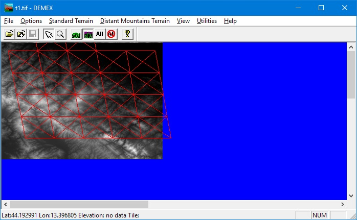

4. Modellare le montagne distanti¶
La procedura di creazione delle montagne distanti si effettua sempre con Demex
(se non avete la versione registrata va usato in modalità Demostration)
Accertiamoci che fra le route sia presente lo scenario di default USA2 (Marias Pass): durante il processo di costruzione vengono prelevati alcuni files da questa route.
4.1. Creare la route temporanea¶
Apriamo il Route Geometry Extractor e creiamo una route chiamata Temporanea: non è necessario creare il
quad-tree, bastano solo i parametri generali.
Apriamo Demex (se non avete la versione registrata va usato in modalità Demostration),
quindi nel menù File selezioniamo la voce Select Route e dall’elenco la nostra route.
Sempre dal menu File selezioniamo Refresh Route Tiles
Poi dal menu Distant Mountains Terrain selezioniamo Prepare Route
Confermiamo con OK e minimizziamo Demex.
4.2. Generare il quad-tree¶
Apriamo nuovamente il Route Geometry Extractor e quindi apriamo la nostra route
Dal menu File scegliamo Load Quad Tree quindi ingrandiamo al massimo centrando la zona della nostra route.
Dobbiamo quindi cliccare il pulsante delle distant mountains, quello con la freccia verso il basso.
La mappa si svuota dei quadrettini e potremo creare una nuova selezione per le nostre montagne distanti come abbiamo fatto per il terreno normale; questa volta conviene abbondare nella selezione affinchè il paesaggio si estenda anche a parecchi km dalla linea.
Con il tasto sinistro facciamo un rettangolo grande che comprenda la zona da creare.
All’interno della selezione, cliccando con il tasto destro del mouse appare un menu
dal quale dobbiamo selezionare Add all Selection Tiles. Possiamo ripetere l’operazione
più volte fino a selezionare tutta la zona che ci interessa.
Al termine della selezione, sempre cliccando con il tasto destro del mouse,
dal menu selezioniamo Toggle Populated State (all’interno dei quadrati appare una X).
Salviamo il quad-tree (da File clicchiamo su Save Quad Tree) e
facciamo generare la struttura andando nel menu
Edit e cliccando su Generate Flagged Tiles.
Salviamo nuovamente il quad-tree (da File il solito Save Quad Tree)
Possiamo chiudere il Route Geometry Extractor e tutto
Train Simulator Editors & Tools ed ingrandire di nuovo Demex.
4.3. Applicare le DEM¶
Ricarichiamo i dati della route andando in File e cliccando su Refresh Route Files
Poi dal menu Distant Mountains Terrain clicchiamo su Select Temporary Route;
dalla tendina scegliamo la route temporanea che abbiamo creato all’inizio della procedura.
A questo punto utilizzando il sesto ed il settimo bottone della toolbar (che prima era disattivato) possiamo passare dal quad-tree del terreno normale a quello delle distant mountains: selezioniamo ovviamente queste ultime.
Adesso dobbiamo caricare le DEM (eventualmente anche con il merge) come già fatto per il terreno normale. Aiutatevi con lo zoom per vedere la mappa nel suo complesso.
Siamo finalmente pronti a generare le distant mountains:
dal menu Distant Mountains Terrain scegliamo Create distant mountain Terrain -step 3
Al termine dell’operazione confermiamo con OK.
Minimizziamo ancora una volta Demex ed apriamo il Route Editor
Selezionare la Route Temporanea creando quindi il Terrain Buffer. Così facendo si creano i Tiles nell’omonima cartella della Route temporanea
Terminata la procedura di generazione terreno chiudiamo il Route Editor.
Ingrandiamo nuovamente Demex
Andiamo nel menu Distant Mountains Terrain e selezioniamo la voce Copy DM tiles back to route -step 5.
Al termine dell’operazione possiamo chiudere definitivamente Demex